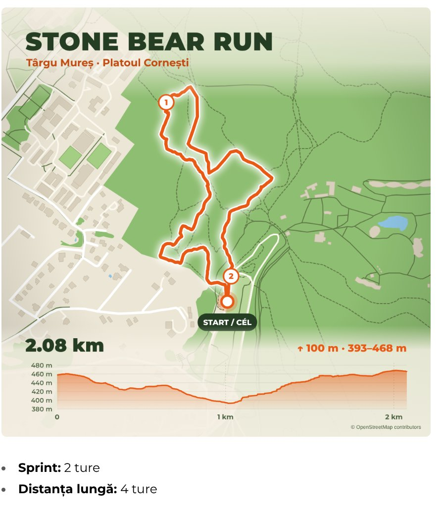

Sport is one of the ways I build consistency outside academic work. It gives structure to my week, keeps me grounded, and helps me train patience and long-term discipline.
Endurance Focus
Triathlon & Endurance Training
I am actively training for endurance sports, including marathons and triathlons, with the ultimate goal of finishing an Ironman 70.3. Endurance sport rewards consistency over short bursts of motivation, teaching me how to stay disciplined, follow structured training blocks, and show up even when progress feels gradual.
TriathlonMarathonIronman 70.3Endurance
Core Philosophy
Why It Matters
It is my motivation to grow, develop, become better, and see myself continuously progressing doing something I genuinely enjoy. Working and studying keeps my brain sharp and active, while through endurance sports I train my body and fuel my mind.
GrowthMind & BodyDisciplineEnergy
Competitions
Races I Participate In
Official running, triathlon, and endurance milestones with verified race-day timing and GPS tracking.
Platoul Cornești, Târgu Mureș, Romania 21 November 2026 Long Distance (4 Laps) · Bib #19
Stone Bear Race (Ursul de Piatră) — 4 Run 4 Fun (Etapa 2)
Competed in the Long Distance (Distanța lungă) race at the Stone Bear Race (Cursa Ursul de Piatră) on November 21, 2026, Stage 2 of the 4 Run 4 Fun autumn trail running series on Platoul Cornești in Târgu Mureș, Romania. The long-distance course covered 4 laps of the 2.08 km forest loop (8.32 km total with +400 m cumulative elevation gain between 393 m and 468 m altitude). Finished in an official time of 01:02:30, placing 43rd overall (out of 51 finishers) and 9th in the M20–29 category (Bib #19).
Stone Bear Race4 Run 4 Fun · Etapa 2Long Distance · 4 Laps8.32 km · +400 mM20–29 (#9)Overall #43Platoul Cornești
Distance8.32 km (4x)
Official Time1h 02m 30s
Elevation Gain+400 m
Position#43 · #9 M20-29

Course Map & Elevation Profile (2.08 km × 4 Laps)
Bremen, Germany 13 September 2026 10km Lauf
21. swb-Marathon Bremen — 10km Lauf
Participated in the 10km race at the 21st swb-Marathon Bremen on September 13, 2026. The race started at the historic Marktplatz beneath the twin Gothic spires of the St. Petri Cathedral, taking runners through Bremen Mitte and along the scenic banks of the Weser river. Finished the 11.03 km course in 1 hour and 1 minute with a consistent 5:32 /km average pace.
Verified 2026 training volume across running, cycling, walking, and gym sessions—surpassing 1,000 kilometers logged on Strava.
2026 Season Summary 257 Logged Activities 1,012.9 km Total
2026 Endurance Volume — 1,012.9 km & 180h 31m Active Time
2026 was a great, consistent training year across four disciplines: 434.5 km of cycling (27 rides, 26h 25m), 204.7 km of running (33 runs, 24h 53m, +1,179 m elevation), 373.7 km of walking & hiking (160 activities, 95h 55m, +1,265 m elevation), and 37 gym strength sessions (33h 18m). Altogether, I logged 1,012.9 total kilometers, 3,419 m of elevation gain, and over 180 hours of recorded training. It was a very solid year, and my main objective for next year is to push even harder and beat every single one of these statistics.
Strava 20261,012.9 km Total434.5 km Bike204.7 km Run373.7 km Walk37 Gym Sessions180h 31m Active